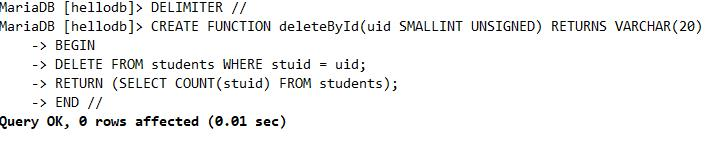

视图
视图：VIEW,虚表，保存有实表的查询结果
创建方法：
CREATE VIEW view_name [(column_list)] AS select_statement [WITH [CASCADED | LOCAL] CHECK OPTION]
查看视图定义：
SHOW CREATE VIEW view_name
删除视图：
DROP VIEW [IF EXISTS] view_name [, view_name] ... [RESTRICT | CASCADE]
视图中的数据事实上存储于“基表”中，因此，其修改操作也会针对基表实现；其修改操作受基表限制
函数
系统函数和自定义函数
[系统函数]https://dev.mysql.com/doc/refman/5.7/en/func-op-summaryref.html
自定义函数 (user-defined function UDF)
保存在mysql.proc表中
创建UDF
CREATE [AGGREGATE] FUNCTION function_name(parameter_name type,[parameter_name type,...])RETURNS {STRING|INTEGER|REAL} runtime_body
说明：
参数可以有多个,也可以没有参数 必须有且只有一个返回值
参数可以有多个，也可以没有
示例无参数：
create function hellofun() returns varchar(20) return 'hello word!';
示例有参数：
DELIMITER // #避免遇到；就执行，让所有语句作为一个整体执行，用//代替；的含义
CREATE FUNCTION deleteById(uid SMALLINT UNSIGNED) RETURNS VARCHAR(20)
BEGIN
DELETE FROM students WHERE stuid = uid;
RETURN (SELECT COUNT(stuid) FROM students);
END // #到最后想执行就加上//
DELIMITER ; #用于向 MySQL 提交查询语句

自定义函数中定义局部变量语法
DECLARE 变量1[,变量2,... ]变量类型 [DEFAULT 默认值]
说明：局部变量的作用范围是在BEGIN...END程序中,而且定义局部变量语句必须在BEGIN...END的第一行定义
示例：
DELIMITER //
CREATE FUNCTION addTwoNumber(x SMALLINT UNSIGNED, Y SMALLINT UNSIGNED)
RETURNS SMALLINT BEGIN DECLARE a, b SMALLINT UNSIGNED;
SET a = x, b = y;
RETURN a+b;
END//
DELIMITER ;
为变量赋值语法
SET parameter_name = value[,parameter_name = value...]
SELECT INTO parameter_name
示例:
...
DECLARE x int;
SELECT COUNT(id) FROM tdb_name INTO x;
RETURN x;
END//
查看函数列表：
SHOW FUNCTION STATUS;
查看函数定义
SHOW CREATE FUNCTION function_name
删除UDF:
DROP FUNCTION function_name
调用自定义函数语法:
SELECT function_name(parameter_value,...)
存储过程
存储过程优势
存储过程把经常使用的SQL语句或业务逻辑封装起来,预编译保存在数据库中,当需要时从数据库中直接调用,省去了编译的过程
提高了运行速度
同时降低网络数据传输量
存储过程与自定义函数的区别
存储过程实现的过程要复杂一些,而函数的针对性较强
存储过程可以有多个返回值,而自定义函数只有一个返回值
存储过程一般独立的来执行,而函数往往是作为其他SQL语句的一部分来使用
存储过程：存储过程保存在mysql.proc表中
创建存储过程
CREATE PROCEDURE sp_name ([ proc_parameter [,proc_parameter ...]]) routime_body
proc_parameter : [IN|OUT|INOUT] parameter_name type 其中IN表示输入参数，OUT表示输出参数，INOUT表示既可以输入也可以输出； param_name表示参数名称；type表示参数的类型
查看存储过程列表
SHOW PROCEDURE STATUS;
查看存储过程定义
SHOW CREATE PROCEDURE sp_name
调用存储过程
CALL sp_name ([ proc_parameter [,proc_parameter ...]])
CALL sp_name
说明:当无参时,可以省略"()",当有参数时,不可省略"()”
存储过程修改
ALTER语句修改存储过程只能修改存储过程的注释等无关紧要的东西,不能修改存储过程体,所以要修改存储过程,方法就是删除重建
删除存储过程
DROP PROCEDURE [IF EXISTS] sp_name
创建无参存储过程
delimiter //
CREATE PROCEDURE showTime() BEGIN SELECT now();
END//
delimiter ;
CALL showTime;
创建含参存储过程：只有一个IN参数
delimiter //
CREATE PROCEDURE selectById(IN uid SMALLINT UNSIGNED)
BEGIN
SELECT * FROM students WHERE stuid = uid;
END//
delimiter ;
call selectById(2);
示例：
delimiter //
CREATE PROCEDURE dorepeat(n INT)
BEGIN
SET @i = 0; SET @sum = 0;
REPEAT SET @sum = @sum+@i;
SET @i = @i + 1;
UNTIL @i > n END REPEAT;
END// delimiter ;
CALL dorepeat(100);
SELECT @sum;
创建含参存储过程:包含IN参数和OUT参数
delimiter //
CREATE PROCEDURE deleteById(IN uid SMALLINT UNSIGNED, OUT num SMALLINT UNSIGNED)
BEGIN
DELETE FROM students WHERE stuid = uid;
SELECT row_count() into num;
END//
delimiter ;
call deleteById(2,@Line);
SELECT @Line;
说明:创建存储过程deleteById,包含一个IN参数和一个OUT参数.调用时,传入删除的ID和保存被修改的行数值的用户变量@Line,select @Line;输出被影响行数
存储过程和函数中可以使用流程控制来控制语句的执行
流程控制：
IF：用来进行条件判断。根据是否满足条件，执行不同语句
CASE：用来进行条件判断，可实现比IF语句更复杂的条件判断
LOOP：重复执行特定的语句，实现一个简单的循环 LEAVE：用于跳出循环控制
ITERATE：跳出本次循环，然后直接进入下一次循环
REPEAT：有条件控制的循环语句。当满足特定条件时，就会跳出循环语句
WHILE：有条件控制的循环语句
触发器
触发器的执行不是由程序调用，也不是由手工启动，而是由事件来触发、激活从而实现执行
创建触发器
CREATE
[DEFINER = { user | CURRENT_USER }]
RIGGER trigger_name
trigger_time trigger_event
ON tbl_name FOR EACH ROW
trigger_body
说明：
trigger_name：触发器的名称
trigger_time：{ BEFORE | AFTER }，表示在事件之前或之后触发
trigger_event:：{ INSERT |UPDATE | DELETE }，触发的具体事件
tbl_name：该触发器作用在表名
示例 ：
CREATE TABLE student_info (
stu_id INT(11) NOT NULL AUTO_INCREMENT,
stu_name VARCHAR(255) DEFAULT NULL,
PRIMARY KEY (stu_id)
);
CREATE TABLE student_count (
student_count INT(11) DEFAULT 0
);
INSERT INTO student_count VALUES(0);
示例：创建触发器，在向学生表INSERT数据时，学生数增加，DELETE学生时， 学生数减少
CREATE TRIGGER trigger_student_count_insert
AFTER INSERT
ON student_info FOR EACH ROW
UPDATE student_count SET student_count=student_count+1;
CREATE TRIGGER trigger_student_count_delete
AFTER DELETE
ON student_info FOR EACH ROW
UPDATE student_count SET student_count=student_count-1;
查看触发器
SHOW TRIGGERS
查询系统表information_schema.triggers的方式指定查询条件，查看指定的触发器信息。
mysql> USE information_schema;
mysql> SELECT * FROM triggers where trigger_name='trigger_student_count_insert';
删除触发器
DROP TRIGGER trigger_name;